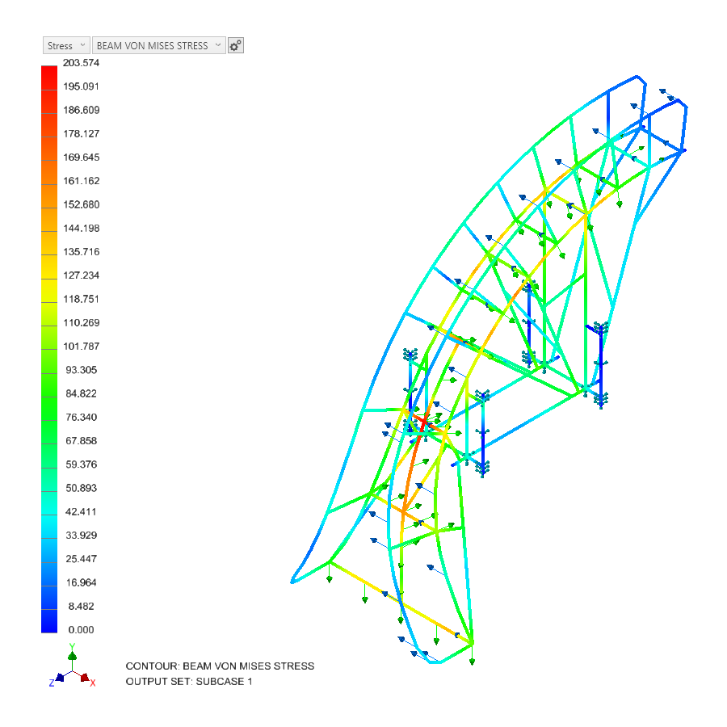
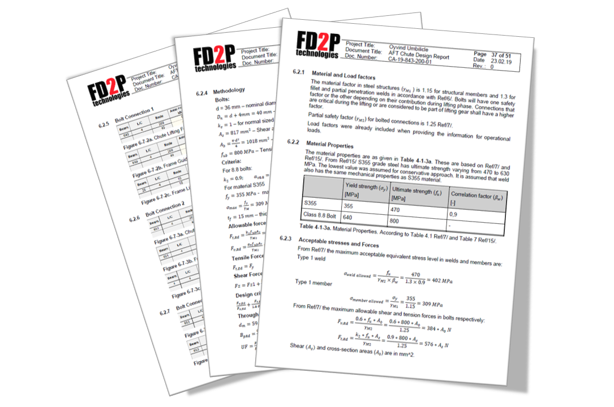
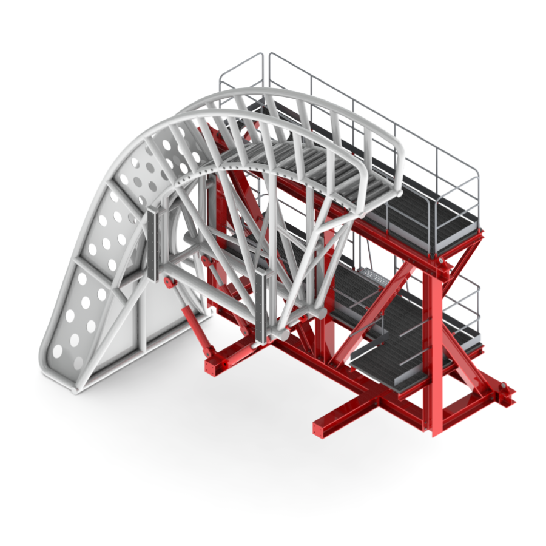
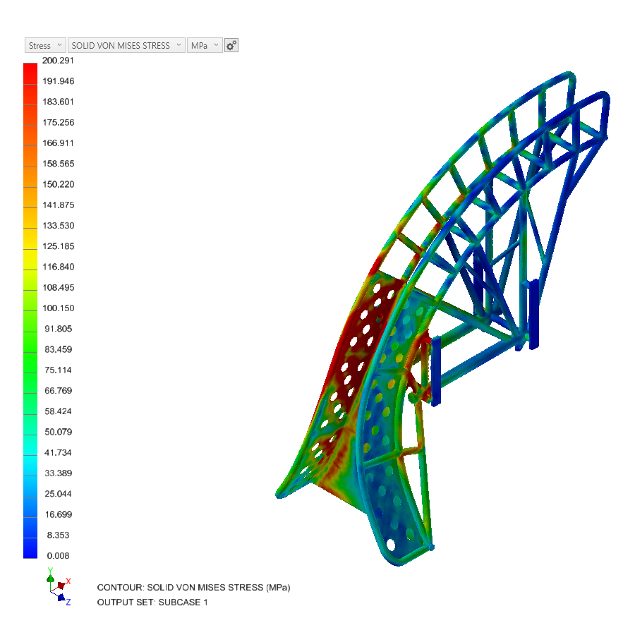
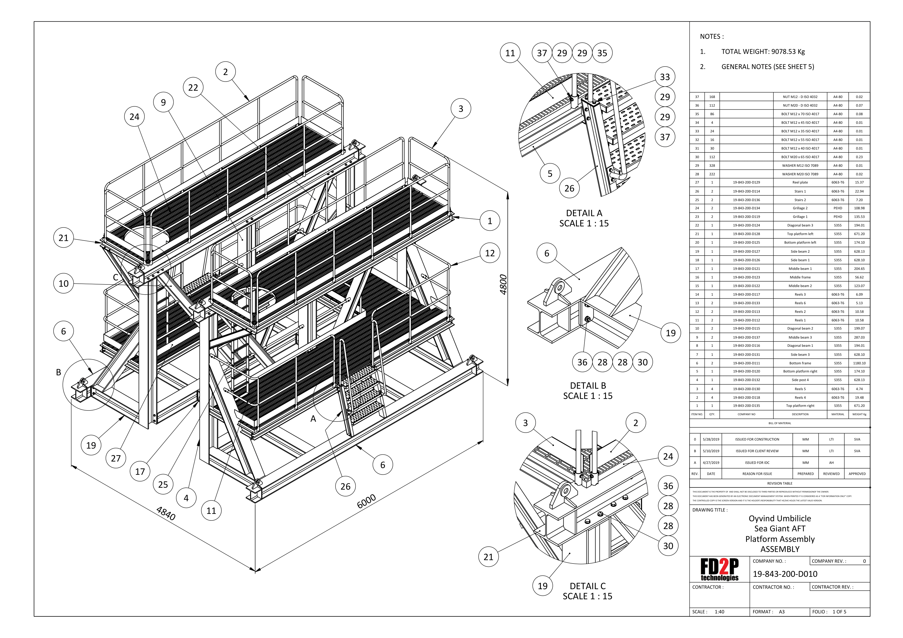
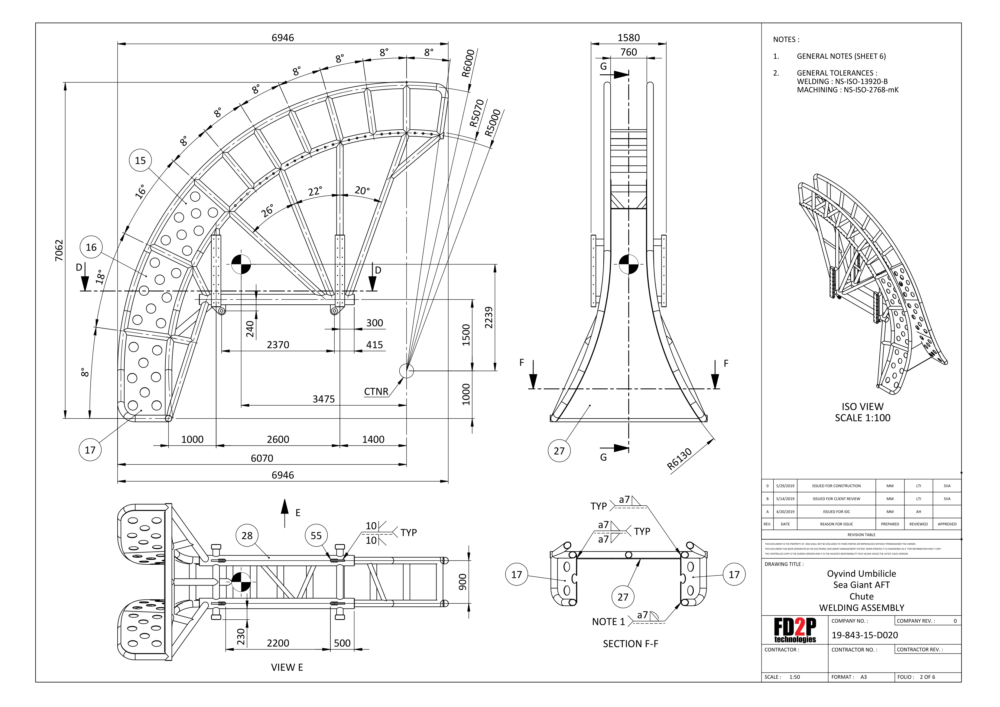

At FD2P, we bring together experienced engineers, industrial designers, and 3D specialists to deliver practical, high-quality solutions for both offshore and onshore projects. Our independence from specific industries allows us to adapt quickly, focus on client needs, and provide the right expertise for every challenge.
With a deep understanding of every stage in the mechanical industry project lifecycle, we provide qualified support wherever it is needed — from initial concept and engineering calculations to fabrication oversight and final installation. Our team’s experience across design, production, and mobilization keeps decisions practical and builds predictable outcomes.
We work directly with industry partners across Scandinavia and Europe — companies we have collaborated with for many years. Long-term relationships only work if quality holds; that’s been our focus from the start.